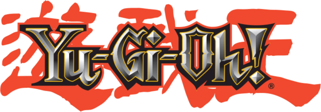

Aquí están mis cosas de...

|
En esta sección hay un par de cosas: |
|---|
|
¡Mi plantilla para MSE para hacer tus propias cartas! Todos los tipos, atributos y fondos de cartas oficiales, de cosas del anime y de modos de juego específicos están aquí, ¡tanto en inglés como en español! Además de varios fondos custom que hice para algunas cartas en específico. ¡Puedes descargar el programa aquí o verlo en mi Deviantart! |
 |
|
Lo otro es un pack de ilustraciones de cartas al estilo del anime para ygopro que hice por 2019. Con esto me refiero a que simplemente la carta tiene su nivel, atributo ataque y defensa. Aquí la comparación. |
  |
|
Lo hice ya que me parecía un formato elegante, al tener poder ver la información detallada de las cartas de otras formas. Al ver que todos los packs que veía le faltaban las cartas más recientes para ese momento, decidí completarlos, dando como resultados este pack. Debido al límite de tamaño por archivo en Mega, tuve que subirlo en 2 partes. En fin, aquí están la parte 1 y la parte 2. |